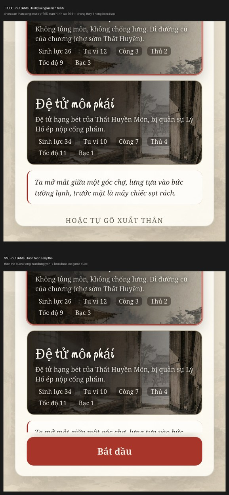

Bản chạy thật trên GitHub Pages · đo bằng Safari (WebKit)
Anh báo chọn xuất thân xong không bấm được "Bắt đầu". Tôi dựng lại đúng thao tác đó và tìm ra: nút không hỏng, nó bị đẩy ra ngoài màn hình.
Khi anh bấm chọn một xuất thân, khối trích đoạn mở đầu (58px) hiện ra ngay dưới hai thẻ. Khối đó đẩy nút "Bắt đầu" xuống dưới.

Tách thẻ làm hai phần: phần nội dung cuộn riêng, nút "Bắt đầu" đứng yên ở đáy thẻ. Nội dung dài bao nhiêu thì cuộn bấy nhiêu, nút không bao giờ bị đẩy đi.
Bấm thật vào nút trên từng thiết bị, rồi xem có vào được game không (màn chọn phải ẩn đi và truyện phải hiện ra):
game/play.html và docs/game/play.html.Lỗi này không phải do lần sửa nền vuông trước đó. Tôi đã lấy đúng bản code trước khi tôi sửa và chạy lại: nút cũng ở y=795, cũng ngoài màn hình. Nó có từ lần làm màn chọn xuất thân (hiện trích đoạn mở đầu).
Nhưng lỗi thì vẫn là lỗi, và anh không vào được game — nên tôi sửa luôn.
Vào game thửNếu vẫn không bấm được, anh nói tôi biết anh dùng máy gì và đang ở màn nào — tôi dựng lại đúng máy đó để tìm tiếp.